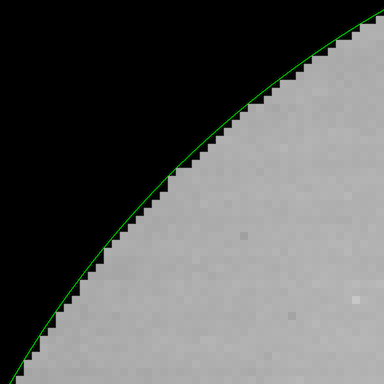

# ADD CODE HERECreating a mask containing a circle
Pair programming: part 1
As part of this activity you have been split into pairs/threes and are being asked to create code together using a technique called pair programming.
For this exercise, one of you will be writing the code (the driver) and the others will be directing and advising on what should be written (the navigator(s)) with lots of discussion in between. Decide between yourselves who would like each role to start with. For the second exercise you will swap some of your roles but carry on working together in the same pairs/threes.
How a mask could be used
In this workbook, we want you to create a mask. By this we mean a square (or rectangular) grid of zeros (0s) and ones (1s) with values of 1 in the positions you want to keep and values of 0 in the positions you don’t. This mask could then be applied to another image for example:
Within the mask the edge would look something like this:

where the thin green line represents the edge of where the real circle would be.
Circle within a square
The mask we want you to create should represent a circle (defined within the grid). The equation governing the edge of a circle is:
\[ (x-x_0)^2 + (y-y_0)^2 = r^2 \]
where
- \(x\), \(y\) are the x, y positions within the grid
- \(x_0\), \(y_0\) are the centre of the circle
- \(r\) is the radius
For example, for a circle with radius of 2 with a centre point of (4, 3), if we looked at position (5, 4), then this would be inside that circle since:
\[\sqrt{((5 - 4)^2 + (4 - 3)^2)}\] \[ = \sqrt{1^2 + 1^2} = \sqrt{1 + 1} = \sqrt{2} = 1.41\]
which is less than the radius of 2.
Exercise A
Create a 100 x 100 square grid containing a circle. The centre of the circle should be at position x = 40, y = 50 and have a radius of 10. Call your output circular_mask.
Break this idea down into the different steps: - Start by creating an array - how could you create an array of the right shape? - How would you turn the equation above into code? - How would you evaluate one (x, y) position to start with? - How do you move on to evaluate every position? - …
Important note: For numpy remember that the axes are opposite to what you would expect for an x-y grid - they store data as row-major meaning you access the row as the first index (y) and the column as the second index (x). This means position arr[1, 0] would be at position (0, 1) in x, y co-ordinates rather than (1, 0) as you may expect.
When completed, you can use the plotting code below to show your mask. This uses a matplotlib function called imshow (documentation; example from image gallery) which can plot your 2D data on a grid.
### UNCOMMENT THIS CODE TO PLOT YOUR MASK WHEN COMPLETED
#
#import matplotlib.pyplot as plt
#
#fig, ax = plt.subplots(figsize=(6, 3.2))
#
#ax.set_title('Circular Mask')
#ax.imshow(circular_mask,cmap="bone",origin="lower") # Setting colourmap (cmap) and the position of 0,0 (origin) on the plotTake time to discuss this but if you are really stuck, there is a hint notebook available which shows how you would create a mask for a square rather than a circle as an example of how you could approach this.
Extended:
- Consider how you could create a mask for a rectangle rather than a circle (or a square)
More complex:
- What are some other ways a mask could created using the features of
numpy?
- Look other numpy (
np) functions e.g. - Look at the more complex ways that
numpy.arrayobjects can be indexed - indexing multi-dimensional arrays - Consider how values can be assigned to whole sections of an array directly.